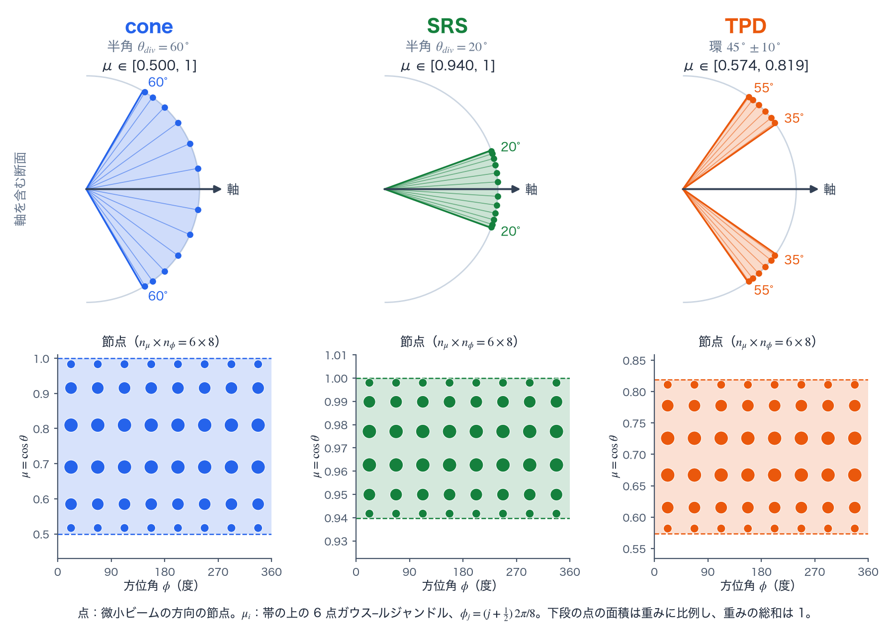
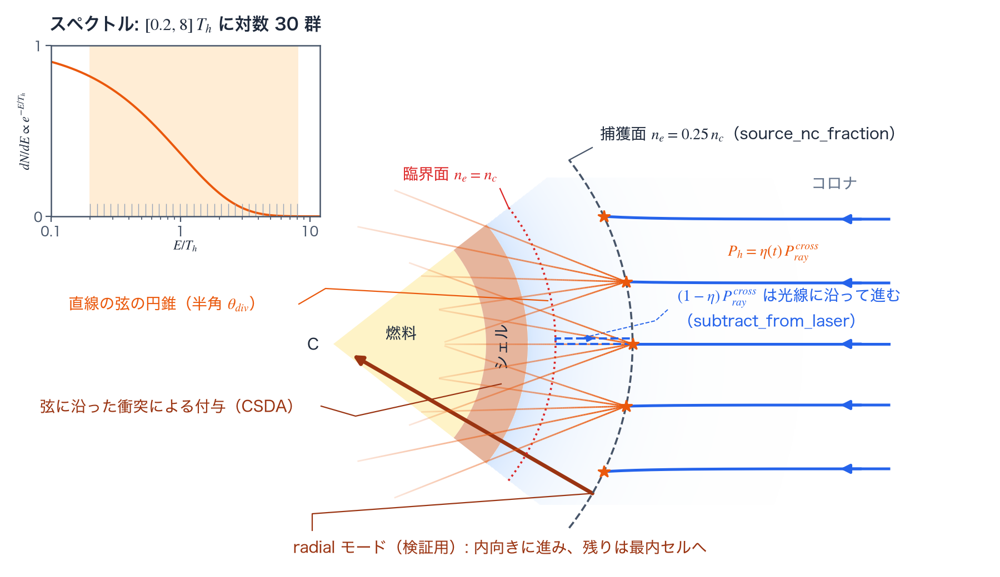

ホット電子 reference
TENRYU のホット電子（hot electron）モデルは、Colaïtis ら [1] と、LLE（Laboratory for Laser Energetics、米国ロチェスター大学）の 1D 流体コード LILAC に倣った、あらかじめ与える形のレーザープラズマ不安定性（laser–plasma instability、LPI）予熱（preheat）を、レーザーのパワーの捕獲（capture）、指数スペクトル、円錐方向の求積（quadrature）、直線の弦（chord）に沿う輸送、衝突による減速（collisional slowing-down）、物質へのエネルギー付与（deposition）として組み立てたものである。LPI の波の成長や飽和を自己無撞着（self-consistent）に解くのではなく、ホット電子温度は較正（calibration）された入力として与え、変換効率（conversion efficiency）η(t) は較正された入力または縮約クロージャ（reduced closure）から与える。この計算に固有の用語は用語の節で説明する。
物理機構
レーザー強度が閾値を超えると、パラメトリック不安定性（parametric instability） — 2 プラズモン崩壊（two-plasmon decay、TPD）と誘導ラマン散乱（stimulated Raman scattering、SRS） — が大振幅の電子プラズマ波（electron plasma wave）を励起する。これらの不安定性が主に起こる場所が四分の一臨界密度（quarter-critical density）付近になるのは、そこで娘波（daughter wave）の電子プラズマ波の振動数がレーザー振動数の約半分となり、TPD・SRS の周波数整合条件（frequency-matching condition）を満たせるからである。励起されたプラズマ波は電子を捕捉（trapping）し、熱的な主成分をはるかに超える数十〜数百 keV まで加速する。その飛程（range）は熱的な電子よりずっと長いため、衝撃波に先行してシェルを貫き、燃料を予熱して断熱度（adiabat）を上げ、圧縮性能を劣化させる。この予熱を定量化することが、この物理カーネルの目的である。
これらの不安定性は、輻射流体のメッシュでは解像できない運動論的（kinetic）かつ波長以下のスケールで起こるため、TENRYU は波の成長や飽和そのものを解かない。Colaïtis [1] と LILAC の考え方に従い、変換効率 η(t) とホット電子温度 \(T_h\)（namelist の T_hot_eV）は較正された入力とするか、局所のプラズマ量で駆動される縮約クロージャから η を与える。生成源（source）は物理が実際に起こる場所、すなわち追跡した各光線が最初に \(n_e=f_s n_c\) を横切る点に置き、そこまでの上流吸収を生き延びたパワーを使う。
観測されるホット電子のスペクトルは、単一温度の指数分布でおおよそ表せる。TENRYU はこの指数分布を対数刻みの群（group）に分け、解析的なモーメントから重みと流束平均の代表エネルギーを作る。各群の重みは累積分布の端点値の差として作るので、総和すると中間項が打ち消し合い、\(\sum_g W_g=1\) が数値求積なしで厳密に成り立つ。方向は光線の進行方向を軸とする決定論的な一様円錐で、無作為抽出ではなく求積を使うため、実行のたびにビット単位（bitwise）で再現する。
輸送の弦（用語）は直線である。対象は光ではなく 100 keV 程度の電子なので屈折はなく、v1 では角度散乱も含まない。自由電子による連続的な減速には、相対論的な運動学（relativistic kinematics）とクーロン対数（Coulomb logarithm）を使う。\(\Delta P=\dot N_g(E_{in}-E_{out})\) という記帳の仕方により、積分誤差は付与の位置を隣接セルのあいだで動かすだけで、群のパワーを生み出したり消したりはしない。ホット電子のパワーはすべて、セルへの付与か、メッシュの外縁からの逸出（escape）のどちらかになり、変換パワー \(P_h\) は付与 \(P_{dep}\) と逸出 \(P_{esc}\) の和に等しい。逸出したエネルギーは、全体のエネルギー台帳（energy ledger）ではレーザーの逸出に数える。交差ビームエネルギー転送（cross-beam energy transfer、CBET）と共存する経路（cbet.geometry_mode="port_section" と eta_mode="model" の組合せで、保存しておいた区間ごとの光学的厚さを順に適用して光線のパワー減衰を再現し、交差点での通過パワーを取り出す）では、レーザーのパワーの収支「レーザー光の吸収によるセルへの沈着（ホット電子の付与は含まない）+ 未吸収パワー + \(P_{hot}\)（全光線の変換パワー \(P_h\) の総和）= 入力」が相対 \(10^{-10}\) 以内で閉じることを、この結合経路の単体試験 test_port_section_s3 の判定基準とする。波長離調があるときは、CBET がイオン音波へ渡したパワーもこの収支に加わる。
モデルの適用範囲と生成源
Laser.hot_electron.enable=True でモデルを有効にする。基本の処方では、追跡した各光線が外側から内側へ進み、初めて \(n_e=f_s n_c\) を上向きに横切る位置（捕獲面との交点）を生成源とする。既定の \(f_s=\)source_nc_fraction は 0.25 で、四分の一臨界密度付近の LPI 活性帯を表す。1D の光線追跡（Laser.mode="raytrace_2d"）では、交差を含む区間はその点で分割し、交差より手前の逆制動輻射（inverse bremsstrahlung、IB）吸収を先に適用する。したがって生成源のパワーは、区間の入口における値ではなく、捕獲面に実際に到達した値である。Laser.mode="radial_absorption_1d" は光線を追跡せず、全パワーを 1 本の動径方向の光線として外側のセルから内向きに進め、セルの中点で評価した \(n_e/n_c\) が \(f_s\) 以上になる最初のセルで、そのセルに入るパワーを使う。出発位置はそのセルの外側の面、\(\mu_{axis}=-1\) とする。2D RZ の捕獲は、現在も区間の入口におけるパワーを使う。
\(P_{ray}^{cross}\) は上流の処理を終えたあとのパワーである。CBET と共存できる経路では、CBET 適用後の最終的な伝播記録から捕獲するため、まだ交換を受けていない公称のビームパワーを使うことはない。通常 CBET とホット電子は排他だが、cbet.geometry_mode="port_section" と eta_mode="model" の組合せのときだけ排他が解除され、この CBET 適用後の規則で動作する。
η(t) の与え方は 4 通りある。スカラーの簡易指定（scalar shorthand）では、eta_hot が一定値を、eta_hot_table が初期化時に凍結（freeze）する時間表を与える。sources は最大 4 つの cone / TPD / SRS のチャネル（channel）を定義し、チャネルごとに捕獲面、定数または表の η、温度、エネルギー窓、角度帯を設定できる。複数のチャネルは \(f_s\) の昇順に発火し、レーザーの減耗も同じ順で逐次適用する。さらに eta_mode="model" は、局所のプラズマ量で駆動される η の時間発展を選ぶ。いずれもホット電子生成の縮約処方であり、自己無撞着な LPI の求解にはならない。
多群スペクトルと円錐角度モデル
生成源における電子数流束は、温度 \(T_h\) の指数分布に従う。T_hot_eV は eV 単位であり、keV の値ではない。
- \(P_h=\eta P^{cross}_{ray}\) — IB を適用したあとの交差点におけるパワーに η を掛けた値である。1D では交差を含む区間をその点で分割し上流の IB を先に適用するため、生成源が見るのは区間入口ではなく交差点のパワーになる。
- \(T_h=\texttt{T_hot_eV}\,\mathrm{eV\_to\_erg}\) — 設定したスペクトル温度を eV から erg へ変換してから、エネルギーモーメントを評価する。
- \(W_g\) と \(E_g\) — \(\phi_1\)、\(\phi_2\) から作る解析的なモーメントである。ここで \(u=E/T_h\) は規格化エネルギー、\(u_{g\pm1/2}\) は群の端、\(u_{min},u_{max}\) は窓の端である。差は打ち消し合って \(\sum_g W_g=1\) となり、\(E_g\) は各群の流束平均エネルギーである。
- 円錐の求積 — \(\mu\) についてのガウス–ルジャンドル求積（Gauss–Legendre quadrature）の点と \(\phi\) についての等間隔点の直積型の求積で、方向重みの総和は 1 である。
- \(f_s=\texttt{source_nc_fraction}=0.25\) — 既定の捕獲面の位置である四分の一臨界密度である。
subtract_from_laser— 変換したパワーを光線から差し引き、二重計上を防ぐ。捕獲のあとは \((1-\eta)P^{cross}\) がレーザーの経路を進む。
n_energy_groups 個の対数刻みの群を \([E_{min},E_{max}]=[\texttt{E_min_over_Th}T_h,\texttt{E_max_over_Th}T_h]\) に置き、指数分布の解析的なモーメントから、各群のパワー重みと流束平均の代表エネルギーを求める。既定は 30 群、\([0.2,8]T_h\) である。窓の外のパワーは捨てずに窓内の群へ再規格化するため、群重みの総和は 1 になる。
angular_model="cone" は、光線の進行方向を軸として半角 theta_div_deg の立体角の円錐を作る。極角の余弦は n_mu 点のガウス–ルジャンドル求積、方位角は n_phi 点の等間隔求積で離散化し、方向重みの総和を 1 に規格化する。半角を広げると、同じ生成源のパワーが、長さと面密度の異なる弦へ分配される。radial は \(\mu=1\) で内向きに進む検証用のモードであり、円錐の有限の発散を置き換える実運用向けの近似ではない。TPD と SRS のチャネルの角度帯は用語の節に示す。
この計算で使う用語
ホット電子がセルへ付与するエネルギーは、電子が出発する半径、出発する向き、電子のエネルギーに強く依存する。1D の流体計算が持つのは半径方向の分布だけなので、TENRYU は光線が運ぶパワーを、生成源、方向、エネルギー群に分けて、電子の輸送の計算へ渡す。この分け方に使う語は、TENRYU の実装に固有の意味をもつので、まとめて定義する。なお、この頁では、ホット電子がセルへエネルギーを渡すことを付与、レーザー光の吸収によってセルへエネルギーが入ることを沈着と書き分ける。
捕獲面と生成源
捕獲面（capture surface）は、電子密度が臨界密度 \(n_c\) の割合 \(f_s\) になる面 \(n_e=f_s n_c\) である。光線は外側から内向きに進み、密度が上がる向きにこの面を横切る。光線が捕獲面を最初に上向きに横切る点を、交差点と呼ぶ。交差点で光線のパワー \(P_{ray}^{cross}\) の割合 η がホット電子へ移り、光線は残りの \((1-\eta)P_{ray}^{cross}\) で進み続ける。この移す操作を、この頁では捕獲（capture）と呼ぶ。捕獲はモデルの操作であり、プラズマ波が電子を捕らえて加速する物理過程の捕捉（trapping）とは別である。TENRYU は捕捉を解かず、捕獲する割合 η を較正された入力または縮約クロージャで与える（物理機構）。
捕獲面の密度の割合 \(f_s\) は、スカラーの簡易指定では source_nc_fraction、チャネルでは capture_nc_fraction で与える（どちらも 0 より大きく 1 以下）。既定は 0.25、すなわち四分の一臨界密度で、SRS のチャネルだけは既定が 0.18 である。\(f_s\) は、光線が捕獲面に届くまでに上流で吸収されるパワーと、電子が出発する半径を決める。
生成源（source）は、ホット電子が出発する位置、軸の向き、パワーの組である。位置は交差点の半径 \(r_s\)、軸の向きは交差点での光線の進行方向と外向きの動径方向のなす角の余弦 \(\mu_{axis}\)（動径方向に内向きの光線で \(-1\)）、パワーは \(P_h=\eta P^{cross}_{ray}\) である。光線 1 本が、チャネルごとに高々 1 つの生成源を作る。輸送の計算は、同じビン（bin）に入った生成源を 1 つにまとめたものを単位にする。
ビン
ビン（bin）は、生成源を、その生成源を含むセルと \(\mu_{axis}\) の区間の組でまとめた集まりである。\(\mu_{axis}\in[-1,1]\) を 16 等分した区間（幅 0.125）のどれに入るかと、\(r_s\) を含む流体セルが、ビンを定める。メッシュの外にある生成源は、最も近い端のセルのビンに入れる。パワーが 0 のビンは作らない。ビンごとに、次の量をもつ生成源を 1 つ作る。
$$ P=\sum_k P_k,\qquad r_s=\frac{1}{P}\sum_k P_k\,r_{s,k},\qquad \mu_{axis}=\frac{1}{P}\sum_k P_k\,\mu_{axis,k}. $$ここで \(k\) はビンに入った生成源の添字、\(P_k\)、\(r_{s,k}\)、\(\mu_{axis,k}\) はその生成源のパワー、半径、方向余弦である。輸送はこの平均値から始めるので、出発点をセル面へ丸めることはない。ビンは (セル, 区間) の昇順に処理し、実行のたびに同じ順序になる。
ビンの数 16 は定数（コードの kAxisBins）で、namelist のキーではなく、変更できない。ビンにまとめる理由は、輸送の計算量を光線の本数から切り離すためである。1D の光線は 1 ビームあたり既定で 1000 本（Laser.rays_per_beam）あり、交差点ごとに輸送すると計算量が光線の本数に比例する。ビンにまとめると、輸送する生成源は 1 つのチャネルあたり高々 (セル数) × 16 個で、光線の本数に依らない。代償として、同じビンの光線は 1 つの平均の方向に束ねられるので、方向余弦の広がりは 0.125 の分解能でしか残らない。
2D RZ では、生成源の向きが 3 次元なので、ビンの切り方が異なる。セルごとに、子午面内の向き \(\chi=\operatorname{atan2}(k_R,k_Z)\) を \([-\pi,\pi]\) で 16 等分し（コードの kChiBins）、方位方向の成分 \(|k_\phi|\) が 0.3 未満か以上かで 2 つに分けて、1 セルあたり 32 個のビンにまとめる。ここで \(k_R\)、\(k_\phi\)、\(k_Z\) は、光線の進行方向の単位ベクトルの、動径方向、方位方向、軸方向の成分である。ビンごとの生成源は、パワーで重み付けした平均の位置と向き（向きは単位ベクトルに規格化する）をもつ。
微小ビーム
微小ビーム（electron beamlet）は、1 つの生成源から、角度帯の 1 つの方向節点へ出る、1 つのエネルギー群の電子の束である。レーザーのビームではない。1 つの生成源は、方向節点（\(n_\mu\times n_\phi\) 個。\(n_\mu\) と \(n_\phi\) は角度帯の節点の数で、キーは n_mu と n_phi）とエネルギー群（n_energy_groups 個）の積だけの微小ビームに分けられ、既定では \(6\times8\times30=1440\) 本になる。方向節点が減る場合は、その分だけ減る（theta_div_deg=0 では方向が 1 つ、TPD の tpd_delta_deg=0 では \(n_\phi\) 個）。微小ビームのパワーは \(P\,w\,W_g\)（\(P\) は生成源のパワー、\(w\) は方向節点の重み、\(W_g\) は群 \(g\) の重み）、電子 1 個のエネルギーの初期値は群の代表エネルギー \(E_g\)、数流束は \(\dot N=P\,w\,W_g/E_g\) である。同じ方向節点の微小ビームは、同じ弦をたどる。
方向節点の数とエネルギー群の数は、それぞれ方向とスペクトルの分解能を決め、増やすと微小ビームの数、すなわち輸送の計算量が、積に比例して増える。radial モードは方向が 1 つで、チャネルの全パワーを最外の生成源に集めるので、微小ビームは群の数（既定では 30 本）になる。1D の GPU の実装は、微小ビームごとに全セル分の付与パワーの行（倍精度）を作業領域に持つので、微小ビームの数 × セル数 × 8 バイトが 4 GiB を超えると停止する。
チャネルと角度帯
チャネル（channel）は、Laser.hot_electron.sources の 1 要素で、ホット電子を作る 1 つの機構を表す。機構（mechanism）は "cone"、"tpd"、"srs" のいずれかで、チャネルは最大 4 つ指定できる。チャネルごとに、捕獲面（capture_nc_fraction）、変換効率（eta または eta_table。eta_mode="model" ではモデルが与える）、温度（T_hot_eV）、エネルギー窓、角度帯を独立に決める。光線は外側から内向きに進むので、密度の低い捕獲面から順にチャネルを通り、光線のパワーの減耗も \(f_s\) の昇順に逐次適用する。同じ \(f_s\) のチャネルは sources に書いた順である。機構によって、ホット電子が生成される密度、温度、方向の分布が違う。チャネルは、この違いを機構ごとの較正入力として別々に与える仕組みである。
スカラーの簡易指定（scalar shorthand）は、sources を使わず、Laser.hot_electron の直下のキー（source_nc_fraction、eta_hot、eta_hot_table、T_hot_eV、n_energy_groups、E_min_over_Th、E_max_over_Th、theta_div_deg、n_mu、n_phi）で、cone のチャネルを 1 つだけ指定する形である（エラー文でもこの名前で呼ぶ）。これらのキーと sources は同時に指定できず、指定するとエラーになる。
角度帯（angular band）は、生成源の軸 — 交差点での光線の進行方向 — のまわりで、電子を出す方向の範囲である。軸からの極角の余弦 \(\mu\) の範囲と、軸のまわりの方位角 \(\phi\) で決まり、\(\phi\) については一様である。帯の中の方向は、立体角について一様な重みで、\(\mu\) を n_mu 点のガウス–ルジャンドル求積、\(\phi\) を n_phi 点の等間隔点で離散化した節点で表し、重みの総和は 1 である。節点の方向と動径方向の余弦 \(\mu_{dir}\) は次の式で決まる。
機構ごとの帯と既定値は次の表のとおりである。帯と節点の配置は図Aに示す。
| 機構 | 角度帯（\(\mu\) の範囲） | \(f_s\) の既定 | \(T_h\) の既定 |
|---|---|---|---|
"cone" | \(\cos\theta_{div}\le\mu\le1\)（円錐）。\(\theta_{div}\) は theta_div_deg（既定 60°）。 | 0.25 | 50 keV（T_hot_eV = 5.0e4） |
"srs" | 同じ式（前方の細い円錐）。theta_div_deg の既定は 20°。 | 0.18 | 45 keV（4.5e4） |
"tpd" | \(\cos(\theta_c+\Delta)\le\mu\le\cos(\theta_c-\Delta)\)（環）。\(\theta_c\) は tpd_theta_deg（既定 45°）、\(\Delta\) は tpd_delta_deg（既定 10°）。 | 0.25 | 60 keV（6.0e4） |

既定値は機構ごとの較正入力で、文献上の根拠は TPD が [2]–[4]、SRS が [5]–[7] である（リポジトリの docs/NUMERICS.md §5.11.1 に表がある）。TPD の帯は円錐ではなく環で、軸からの極角が \(\theta_c-\Delta\) から \(\theta_c+\Delta\) の間にある方向全体である。軸に対して \(\pm\theta_c\) の向きにある 2 つの葉を、軸のまわりの方位角について平均した帯に等しく、1D では方位角を解像できないので、この環で表す。\(\theta_c-\Delta\le0\) のときは、環の内側の縁が軸に達し、半角 \(\theta_c+\Delta\) の円錐になる。\(\theta_{div}=0\) の円錐は方向が軸の 1 つだけ、\(\Delta=0\) の環は方位角の \(n_\phi\) 個の節点だけになる。
キー angular_model は、すべてのチャネルに共通の選択である。"cone" は上の角度帯に従う弦で電子を輸送し、"radial" は \(\mu=1\) の 1 方向だけを、チャネルの全パワーを集めた最外の生成源から内向きに進める検証用のモードである。機構の名前 "cone" はチャネルの種類を表し、angular_model の値とは別のものである。
弦と近点
弦（chord）は、生成源から 1 つの方向へ出る電子の直線の経路である。レーザーの光線（弦に沿う光線追跡）と違い、屈折も散乱も受けない。球対称の格子では、弦は流体セルの境界の球面と交わり、交点で区間に分かれる。区間ごとの路程 \(ds\) とセルの密度 \(\rho\) から、電子が通る面密度 \(\rho\,ds\) が決まり、この面密度に沿って減速を積分する。
近点（pericenter）は、弦が球の中心に最も近づく点である。生成源の半径が \(r_s\)、弦の方向と動径方向の余弦が \(\mu_{dir}\) のとき、近点の半径は次式で、これは弦と中心の距離に等しい。
$$ r_{peri}=r_s\sqrt{1-\mu_{dir}^2}. $$\(\mu_{dir}<0\)（内向き）の弦は、近点まで内向きに進んで折り返し、外向きに抜ける。\(\mu_{dir}\ge0\) の弦は、すでに近点を過ぎているので、生成源から外向きにだけ進む。近点を含むセルは、内向きの部分と外向きの部分の 2 区間として数える。外側の境界を越えた電子は、逸出として数える。
ゴーストコロナ
ゴーストコロナ（ghost corona、キー Laser.lasermesh.ghost_corona）は、最外の流体セルの外側に置く、光線追跡だけが使う合成の低密度プロファイルである。流体の初期条件が固体と真空の鋭い界面で、プレプラズマがないとき、レーザーの吸収が最外の固体セルに集中して、非物理的な加熱と数値不安定を起こす。これを避けるために、光線が通る格子 LaserMesh（LaserMesh1D と光線の行進）の上にだけ、電子密度が最外の流体セルの値から外向きに指数関数的に下がる帯を置く。密度の範囲は \(n_c\) の 0.03 倍から 0.99 倍（ne_min_frac と ne_max_frac の既定）で、流体の密度、温度、電荷数は変えない。1D_SPH の LaserMesh だけが使い、既定は無効（enabled=False）である。
ホット電子では、ゴーストコロナの密度の範囲に捕獲面の \(f_s\) が入ると、交差点がゴーストコロナの中、すなわち流体メッシュの外側にできる。この生成源は最外のセルのビンに入れ、その回数とパワーを警告に出す。
直線輸送とエネルギー付与

生成から付与までの全体を図Bに示す。輸送の経路は、屈折も散乱も受けない直線の弦である。球幾何ではシェル面との交点を解析的に求め、内向き区間、近点（用語）、外向き区間の順にたどる。出発点がセルの内部にある場合も、最初の面までの部分区間を正確に扱う。各セルでは \(n_e,T_e,\rho\) を一定とみなし、相対論的な速度とクーロン対数を用いる連続減速近似（continuous slowing-down approximation、CSDA）で、自由電子による減速を積分する。エネルギー積分は適応刻みの 4 次ルンゲ–クッタ法（Runge–Kutta method）だが、セルへの付与パワーは常に電子数流束と入口・出口のエネルギー差から計算する。
$$ \Delta P_{i,g}=\dot N_g\left(E_{in}-E_{out}\right). $$この形にしておけば、積分誤差が付与位置のセル間の配分を変えることはあっても、群の総パワーを増減させることはない。電子のエネルギーが熱化（thermalization）の下限 \(\max(2T_e,\,10^{-3}T_h)\)（\(T_e\) はそのセルの電子温度）以下になったら、残りのエネルギーをそのセルへ付与し、外側へ抜けた分は逸出として数える。inner_bc="deposit_residual" は radial モード専用の境界規則で、内側境界へ届いた残りを、最も内側のボイド（void）でないセルへ付与する。もう一方の "escape" は、残りを逸出として数える。円錐の弦は近点を回って外向きへ進むため、この radial 専用の境界指定は使わない。
捕獲から加熱までの手順
- 追跡した光線の上で、捕獲面を上向きに横切る交差点を検出する。交差する区間を分割し、上流側の IB を先に適用したうえで、交差点でのパワーを記録する。ゴーストコロナの帯 — 最外の物理セルより外側にある、光線追跡だけが使う領域 — での捕獲は最外のセルへ寄せ、その回数を数えて報告する。
- 光線ごとの生成源を、生成源を含むセルと \(\mu_{axis}\)（交差点での光線の進行方向と動径方向の余弦）の 16 等分の区間の組、すなわちビンへまとめる。各ビンは \(\mu_{axis}\) と生成源の半径 \(r_s\) の双方について、パワーで重み付けした連続的な代表値を保持し、出発点をセル面へ丸めることはしない。
- 空でない各ビンを、対数刻みのエネルギー群と決定論的な円錐方向へ展開して微小ビームを作り、各微小ビームにスペクトル重みと角度重みの積を持たせる。
- 各微小ビームを弦に沿って進める。シェルとの解析的な交点により、内向き区間・近点・外向き区間の順序と、最初の部分区間を正確に保つ。セルごとに \(n_e,T_e,\rho\) を一定とみなし、部分ステップあたりのエネルギー変化 2% を目標、セルあたり最大 256 部分ステップとする適応 4 次ルンゲ–クッタ法で、CSDA による減速を積分する。上限に達したときは、残りのエネルギーをそのセルへ付与し、その回数を警告に出す。
- 各セルへ \(\Delta P=\dot N(E_{in}-E_{out})\) を付与する。熱化の下限に達した残りはその場で付与し、外側境界を横切る分は逸出とし、radial モードでの内側の残りは
inner_bcに従う。 - 付与と逸出の収支を確かめ、物質へ連成する。セルごとのホット電子パワーは、平滑化（オプション）を適用したあとのレーザーの沈着パワーに加算し（ホット電子の付与分布自体は平滑化しない）、2 温度計算では電子の内部エネルギーを加熱する。時間刻みの制限
"hot_electron"（Δt を決めた制約の名前。時間刻み参照）が、次のステップを \(\Delta t\le f_E\min_{P_i>0}(m_i e_{e,i}/P_i)\)、\(f_E=\texttt{explicit_source_limit}\) で制限する。
レーザーのパワーの収支、物質との連成、時間刻み
subtract_from_laser=True では、捕獲後の光線を \((1-\eta)P_{ray}^{cross}\) として継続する。これにより、同じパワーを熱的なレーザー吸収とホット電子予熱の両方に数えてしまうことを防げる。False は、レーザーを減耗させずに外から追加のホット電子エネルギーを加える、意図的な感度解析用のモードであり、通常の実行で、エネルギーの収支が閉じる設定ではない。チャネルが複数ある場合、下流のチャネルは上流のチャネルが減耗させたあとのパワーを受け取る。レーザーのパワーの収支は、「入力 = セルへの沈着（ホット電子の付与を含む）+ 未吸収パワー + ホット電子の逸出 + 受け手のセルがなく置けなかったパワー + CBET がイオン音波へ渡したパワー」で閉じる。
セルごとのホット電子パワーは、平滑化（オプション）を適用したあとのレーザーの沈着パワーに加算する。その先は標準の源項の注入が担当し、2 温度計算では電子の比内部エネルギーを、1 温度計算では単一の物質エネルギーを加熱する。陽的な源項（explicit source term）による 1 ステップあたりの過大な加熱を避けるため、時間刻みの制限 "hot_electron" が、前ステップの付与パワーから次の時間刻みを制限する。
ここで \(m_i\) はセル \(i\) の質量（イオン質量ではない）、\(e_{e,i}\) はその比電子内部エネルギーで、\(m_ie_{e,i}\) がセルの電子エネルギーの蓄えである。核燃焼カーネルの同名キー explicit_source_limit と同じ構成 — Δt ≤ \(f_E\) × 利用可能な内部エネルギー / 付与パワー — であり、蓄えの取り方だけが違う（こちらは電子エネルギー、燃焼側は電子+イオンの内部エネルギー）。この制限はレーザーの CFL 条件の別名ではなく、ホット電子の陽的な源項に固有のものである。履歴（履歴のチャネル）には、1 ステップあたりの変換エネルギー laser/hot_e_in、付与エネルギー laser/hot_e_deposited（radial モードの内側の残り laser/hot_e_residual を含む）、逸出エネルギー laser/hot_e_escaped（いずれも erg）と、収支の残差 laser/hot_e_conservation_resid（チャネルのうち最大の値）を書く。累積の付与と逸出は laser/hot_e_E_deposited_cum と laser/hot_e_E_escaped_cum である。チャネルが 2 つ以上のときは、チャネルごとの laser/hot_e_ch<i>_in、_deposited、_escaped も書く。subtract_from_laser による減耗は、レーザーのパワーの収支にも反映される。
η(t) の物理モデルという選択肢
eta_mode="model" は、定数や表で与える η を、TPD / SRS のチャネルごとの 1 次緩和方程式（first-order relaxation equation）へ置き換える、1D 球対称向けの明示指定オプションである。各ステップでチャネルの評価面（既定では捕獲面）付近の \(T_e\) と密度スケール長（density scale length）\(L_n\) を評価し、前ステップの交差点におけるパワーから照射強度を作る。規格化指標 \(g\)（エネルギー群の添字とは別の量）は、TPD では Simon ら [8] の閾値パラメータ（レーザー強度・密度スケール長・波長の積を電子温度で規格化した無次元数）を閾値係数 \(C_k\) で割った値、SRS では強度を、絶対閾値強度（密度スケール長と波長で決まる）の \(C_k\) 倍で割った値とする。\(g\le 1\) なら \(\eta_{eq}=0\) とし、\(g>1\) では超過分に対する \(1-e^{-a\sqrt{g-1}}\) 型の飽和形の平衡効率（equilibrium efficiency）を作って、チャネル個別の上限を適用する。時間更新は、固定または Vu ら [2] の型の緩和時間を用いる厳密な指数緩和であり、更新後の効率の合計が全チャネル合計の上限を超えると、各チャネルの効率を比例して縮小する。
ここで \(\eta^n\) は \(n\) ステップ目の効率、\(\eta_{eq}\) は平衡効率、\(\tau\) は緩和時間である。平衡効率と緩和時間の係数は、sources のチャネルごとのキーで与え、既定値は機構で決まる（TPD、SRS の順に書く。Studio が書き出す値も同じである）。
- \(C_k\) — 閾値係数（
threshold_multiplier、1 と 8）。 - \(a\) — 飽和の形を決める係数（
shape_coefficient、どちらも 1）。 - \(\eta_\infty\) — \(g\) が大きいときに平衡効率が近づく値（
eta_inf、0.01 と 0.08）。 - チャネル個別の上限 —
eta_hard_cap（0.03 と 0.08）。平衡効率はこの値を超えない。 - \(\tau\) — TPD では \(1\,\mathrm{ps}/(0.05g+0.06)\) を 3〜10 ps に制限した値（
relaxation_model="vu2012"。制限はrelaxation_tau_min_sとrelaxation_tau_max_s）、SRS では定数relaxation_tau_s（既定 6 ps、relaxation_model="fixed"）である。SRS のチャネルに"vu2012"を指定すると、エラーになる。
強度の計測は 1 ステップ遅れなので、初期の η は 0、最初のステップは交差点でのパワーの計測にあて、次のステップから 0 でない発展が始まる。このオプションは、sources による TPD / SRS チャネルと subtract_from_laser=True を必要とし、1D_SPH だけで使え、スカラーの簡易指定は受け付けない。局所条件に応じて η を変えはするが、解像されたプラズマ波、非線形な LPI の飽和、運動論的な電子生成を解いているわけではない。
namelist による制御
以下は Laser.hot_electron の主要キーである。既定値は、デッキ（deck）で指定しないときの値である。Studio は 1D のデッキにだけ Laser.hot_electron を書き出し、その既定値は表の値と同じである。ただし、tpd_overlap_mode、srs_overlap_mode、illumination_metric、common_wave_delta_theta_deg は Studio が扱わず、書き出さない。チャネル形式の sources は、スカラーの簡易指定（用語）のキーと同時には指定できない。
| キー / モード | 既定値 | 用途 |
|---|---|---|
enable | False | ホット電子による予熱を有効化。 |
eta_hot | 0.0 | スカラーの簡易指定における、一定の変換効率。 |
eta_hot_table | なし | 初期化時に凍結する η(t) の表。指定時は定数より優先する。 |
sources | なし | cone / TPD / SRS の機構別チャネル列。各チャネルに定数または表の η を設定する。 |
eta_mode | "legacy" | η(t) の与え方。"legacy" は定数または表の η、"model" は TPD / SRS について、局所量で駆動される η(t) の緩和モデルを選ぶ。 |
source_nc_fraction | 0.25 | スカラーの簡易指定での捕獲面の密度 \(n_e/n_c\)（\(f_s\)）。チャネルでは capture_nc_fraction。 |
T_hot_eV | 5.0e4 | 指数スペクトルの温度 [eV]。 |
n_energy_groups | 30 | 対数刻みのエネルギー群数。 |
E_min_over_Th / E_max_over_Th | 0.2 / 8.0 | 多群スペクトルの窓 \(E/T_h\)。 |
angular_model | "cone" | 円錐角の輸送。"radial" は検証用である。 |
theta_div_deg | 60.0 | 円錐の発散半角 [deg]。 |
n_mu / n_phi | 6 / 8 | 極角余弦 / 方位角の求積点数。 |
subtract_from_laser | True | 変換した分を光線のパワーから逐次差し引く。 |
inner_bc | "deposit_residual" | radial モードで内側境界に残った分を最内セルへ付与する。 |
explicit_source_limit | 0.2 | "hot_electron" の時間刻み制限に使う \(f_E\)。 |
eta_model.eta_total_cap | 0.08 | eta_mode="model" で、チャネルの η の合計の上限（範囲は 0 より大きく 0.5 以下）。超えたときは各チャネルを比例して縮小する。 |
eta_model.ln_filter_tau_s | 5.0e-12 | eta_mode="model" で、\(1/L_n\) に掛ける指数フィルタの時定数 [s]。 |
tpd_overlap_mode | "single_beam" | eta_mode="model" の TPD の駆動強度の求め方。"common_wave_cluster" は、共通の軸に対して極角の差が common_wave_delta_theta_deg 以内にあるビームを、1 つの電子プラズマ波を共通に駆動するビームの集まりとみなし、その強度の和から求める。Laser.port_configuration.ports と common_wave_delta_theta_deg が必要で、Laser.cbet.geometry_mode="port_section" のときだけ働く。 |
srs_overlap_mode | "per_beam_class" | SRS の駆動の求め方。現在の唯一の値で、ビームのクラスごとに駆動を求め、全ビームの和を 1 つの駆動にはしない。 |
illumination_metric | "fixed" | 照射強度を求める面積に掛ける係数 \(f_{illum}\) の選択。"fixed" は \(f_{illum}=1\)、"equivalent_area" は球面のうち実効的に照射される面積の割合で、eta_mode="model" と Laser.port_configuration.ports が必要であり、Laser.cbet.geometry_mode="port_section" のときだけ働く。 |
common_wave_delta_theta_deg | なし | tpd_overlap_mode="common_wave_cluster" で必須の角度の幅 [deg]（範囲は 0 より大きく 90 以下）。普遍的な既定値はなく、較正して使う。 |
検証と適用上の制限
- 付与と逸出の和が変換パワーに等しいことを表す相対残差 \(|P_{dep}+P_{esc}-P_h|/P_h\) は、スカラーの簡易指定の 1D 計算で構成上閉じており、GXII（激光 XII 号、GEKKO XII）をもとにした簡易試験での実測最大値は \(7\times10^{-15}\) である。
- 機構別チャネルの検査（2026-07-10 の測定）では、機能を無効にしたときの GXII 基準解が 53/53 のスナップショットで相対差 0、スカラーの簡易指定と
sources=[cone]が 55/55 のスナップショットで一致する。3 チャネル・20 ps の実行では各チャネルが \(1.6\times10^{-14}\) 以内で閉じ、チャネルごとの付与・逸出の総和と全体の値は \(3\times10^{-16}\) 以内で一致した。 - 平面配置で角度依存性を調べる検査（2026-07-10 の測定）— 200 セルの平面スラブで \(T_h\)・η・\(f_s\) を 4 つの計算すべてで同一に保ち、発射角だけを変える構成 — では、付与の 90% 深さが cone 0°、SRS 20°、cone 60°、TPD 45° の順にセル 154、152、144、142 となり、吸収割合はそれぞれ 0.734、0.742、0.805、0.820 で、実行の前に期待順序として決めていた単調な順のとおりである。
- η(t) の物理モデルに対する検査は、緩和の更新と、捕獲・減耗・診断のつながりを確認する。
現在のモデルは自由電子による減速だけを含み、束縛電子（bound electron）、プラズモン（plasmon）、縮退（degeneracy）、衝突による角度散乱、再流入（reflux：逃げた電子がシース電場（sheath electric field）で標的へ戻る過程）は扱わない。とくに低温で部分電離した物質では、減速を過小に、飛程を過大に評価し得る。η と \(T_h\) は較正に依存するため、結果は LPI の第一原理的な予測ではなく、指定した生成クロージャに対する予熱の応答として解釈すること。
参考文献
- A. Colaïtis et al., "Coupled Hydrodynamic Model for Laser-Plasma Interaction and Hot Electron Generation," Phys. Rev. E 92, 041101(R) (2015). doi:10.1103/PhysRevE.92.041101
- H. X. Vu et al., "Hot-Electron Production and Suprathermal Heat Flux Scaling with Laser Intensity from the Two-Plasmon-Decay Instability," Phys. Plasmas 19, 102703 (2012). doi:10.1063/1.4757978
- R. K. Follett et al., "Simulations and Measurements of Hot-Electron Generation Driven by the Multibeam Two-Plasmon-Decay Instability," Phys. Plasmas 24, 102134 (2017). doi:10.1063/1.4998934
- E. Rovere et al., "Hot Electron Scaling for Two-Plasmon Decay in ICF Plasmas," Phys. Plasmas 30, 042104 (2023). doi:10.1063/5.0128052
- M. J. Rosenberg et al., "Origins and Scaling of Hot-Electron Preheat in Ignition-Scale Direct-Drive Inertial Confinement Fusion Experiments," Phys. Rev. Lett. 120, 055001 (2018). doi:10.1103/PhysRevLett.120.055001
- M. J. Rosenberg et al., "Stimulated Raman Scattering Mechanisms and Scaling Behavior in Planar Direct-Drive Experiments at the National Ignition Facility," Phys. Plasmas 27, 042705 (2020). doi:10.1063/1.5139226
- A. A. Solodov et al., "Hot-Electron Generation at Direct-Drive Ignition-Relevant Plasma Conditions at the National Ignition Facility," Phys. Plasmas 27, 052706 (2020). doi:10.1063/1.5134044
- A. Simon, R. W. Short, E. A. Williams, and T. Dewandre, "On the Inhomogeneous Two-Plasmon Instability," Phys. Fluids 26, 3107–3118 (1983). doi:10.1063/1.864037